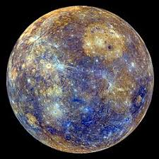
Merkur ist der sonnennächste Planet und zugleich der kleinste im Sonnensystem. Seine Oberfläche ist stark von Kratern geprägt und erinnert an den Mond. Da Merkur fast keine Atmosphäre besitzt, sind die Temperaturunterschiede zwischen Tag und Nacht extrem.
"Merkur, der flinke Bote, ist der kleinste und der Sonne am nächsten."
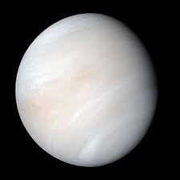
Die Venusatmosphäre ist eine extrem dichte, heiße und ätzende Gashülle, die zu über 96 % aus Kohlendioxid ( ) besteht. Mit einem Bodendruck von ca. 93 Bar (wie in 900 m Wassertiefe auf der Erde) und Temperaturen um 470 °C, verursacht durch einen extremen Treibhauseffekt, ist sie lebensfeindlich. Dichte Schwefelsäurewolken umhüllen den Planeten und reflektieren 80 % des Sonnenlichts.
Venus ist in Größe und Aufbau der Erde ähnlich, wird aber wegen ihrer dichten Kohlendioxidatmosphäre sehr heiß. Dichter Wolkendunst aus Schwefelsäure verdeckt die Oberfläche. Wegen ihrer Helligkeit wird sie oft als Morgen- oder Abendstern bezeichnet.
"Venus, die strahlende Schönheit, ist der heißeste Planet in unserem System."
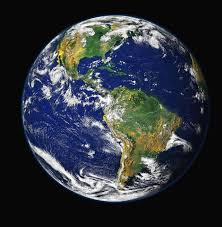
Der Mond ist mit einem Durchmesser von etwa 3475 km der fünftgrößte bekannte Mond des Sonnensystems. Im Verhältnis zu seinem Zentralkörper (über ein Viertel des Erddurchmessers) ist er sogar der größte der acht großen Planeten, nur übertroffen vom Verhältnis Charon zu Pluto (51 %). Das Erde-Mond-System gilt nicht nur deshalb als besonders, sondern auch wegen der Entstehung des Mondes durch die Kollision der Protoerde mit einem anderen, etwa marsgroßen Protoplaneten (Theia). Von den mehr als 400 bekannten Monden des Sonnensystems, die Planeten umkreisen, ist er vermutlich der einzige, der durch eine solche Großkollision entstanden ist.
Die Erde ist unser Heimatplanet und bislang der einzige bekannte Ort mit Leben. Flüssiges Wasser, eine schützende Atmosphäre und ein ausgeglichenes Klima machen sie einzigartig. Rund 71 % der Oberfläche sind von Ozeanen bedeckt.
„Die Erde ist der einzige Planet, von dem wir wissen, dass er Leben beherbergt.“ – Carl Sagan
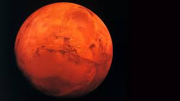
Der Mars besitzt zwei kleine, unregelmäßig geformte Monde, Phobos (Furcht) und Deimos (Schrecken), die 1877 von Asaph Hall entdeckt wurden. Sie sind vermutlich eingefangene Asteroiden oder Trümmer eines Einschlags. Phobos, der größere (ca. 27 km), umkreist den Mars sehr nah und wird in 40-70 Mio. Jahren abstürzen. Deimos ist kleiner (ca. 15 km) und weiter entfernt.
Mars wird aufgrund seiner rötlichen Färbung auch der „Rote Planet“ genannt. Seine Farbe stammt von Eisenoxidstaub auf der Oberfläche. Er besitzt riesige Vulkane, tiefe Canyons und gilt als wichtiger Kandidat für zukünftige bemannte Raumfahrtmissionen.
"Mars, der rote Planet, ist das nächste Ziel der menschlichen Erkundung."
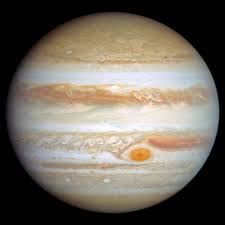
Der Jupitermond Ganymed ist mit einem Durchmesser von 5.262 km der größte Mond des Sonnensystems. Er ist größer als der Planet Merkur und besitzt einen salzwasserhaltigen Ozean unter seiner eisigen Oberfläche, was ihn zu einem Kandidaten für außerirdisches Leben macht.
Jupiter ist der größte Planet unseres Sonnensystems und ein Gasriese. Besonders bekannt ist der Große Rote Fleck, ein gewaltiger Sturm, der seit Jahrhunderten aktiv ist. Jupiter hat viele Monde, darunter die vier großen Galileischen Monde.
"Jupiter, der größte Planet, ein gewaltiger Gasriese, der als Schutzschild dient."
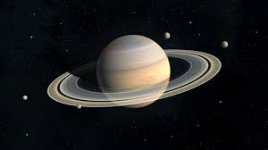
Titan ist mit einem Durchmesser von 5150 Kilometern der größte Mond des Planeten Saturn, weshalb er nach dem Göttergeschlecht der Titanen benannt wurde. Er ist ein Eismond, nach Ganymed der zweitgrößte Mond im Sonnensystem und der einzige mit einer dichten Gashülle.
Saturn ist berühmt für sein markantes Ringsystem, das aus Eis- und Gesteinspartikeln besteht. Wie Jupiter ist er ein Gasriese mit einer dichten Atmosphäre. Trotz seiner Größe ist Saturn der Planet mit der geringsten Dichte im Sonnensystem.
"Saturn, der Herr der Ringe, ist ein faszinierender Anblick mit seinem markanten Ringsystem."
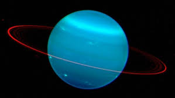
Uranus ist ein Eisriese und fällt durch seine bläulich-grüne Farbe auf, die durch Methan in seiner Atmosphäre entsteht. Seine Rotationsachse ist stark geneigt, sodass er gewissermaßen „auf der Seite“ rotiert.
"Uranus, der liegende Planet, rollt auf seiner Umlaufbahn fast auf der Seite."
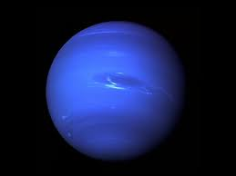
Neptun ist der äußerste der acht Planeten. Er ist ein kalter Eisriese mit sehr starken Winden und Stürmen. Aufgrund der großen Entfernung zur Sonne benötigt er für einen Umlauf etwa 165 Erdjahre.
"Neptun, der blaue Gigant, ist der äußerste und stürmischste Planet."
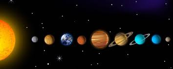
Zu den acht Planeten unseres Sonnensystems gehören Merkur, Venus, Erde, Mars, Jupiter, Saturn, Uranus und Neptun. Sie umkreisen die Sonne auf unterschiedlichen Bahnen und unterscheiden sich stark in Größe, Zusammensetzung und Temperatur.
„Wir sind eine Möglichkeit des Kosmos, sich selbst zu erkennen.“ – Carl Sagan
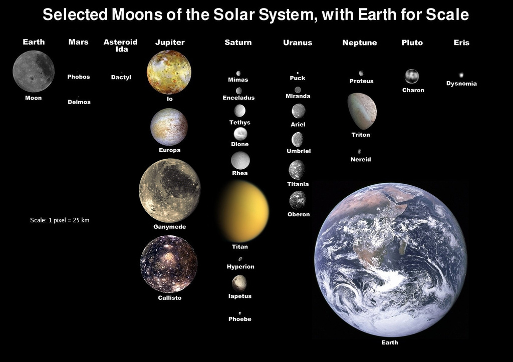
Monde sind natürliche Satelliten, die Planeten umkreisen. Einige Planeten besitzen viele Monde, etwa Jupiter und Saturn. Der Erdmond beeinflusst unter anderem die Gezeiten auf der Erde.
Viele Monde zeigen geologische Aktivität und liefern Hinweise auf die Entstehung des Sonnensystems.
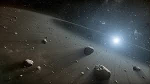
Asteroiden sind kleine, meist felsige Himmelskörper. Viele von ihnen befinden sich im Asteroidengürtel zwischen Mars und Jupiter. Sie gelten als Überreste aus der Frühzeit des Sonnensystems.
Asteroiden helfen Forschenden, die frühen Entwicklungsphasen unseres Planetensystems besser zu verstehen.
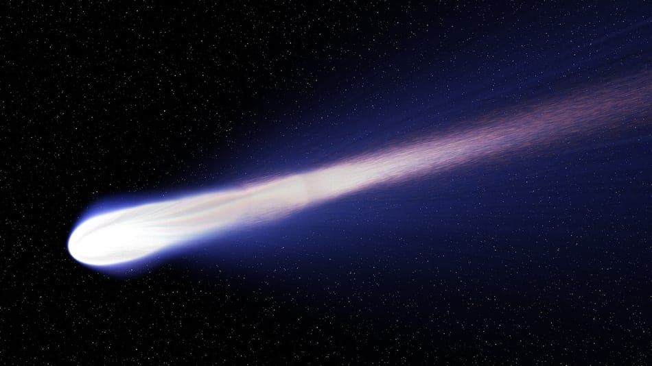
Kometen bestehen aus Eis, Staub und Gestein. Nähern sie sich der Sonne, bilden sie durch Erwärmung eine leuchtende Koma und oft einen langen Schweif. Ihre Bahnen sind häufig stark elliptisch.
Kometen gelten als mögliche Lieferanten von Wasser und organischen Molekülen auf der jungen Erde.
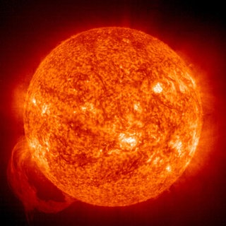
Die Sonne ist das Zentrum unseres Sonnensystems und liefert Licht sowie Wärme für alle Planeten. Jenseits des Einflussbereichs der Sonne beginnt der interstellare Raum – der Bereich zwischen den Sternen mit extrem geringer Teilchendichte.
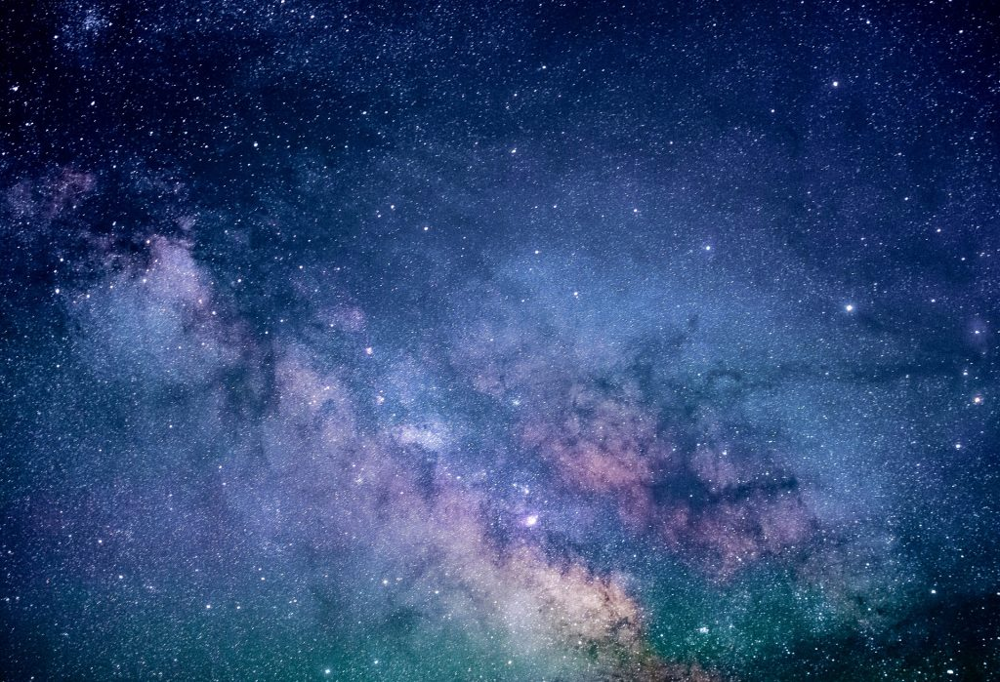
Der interstellare Raum verbindet Sternsysteme und ist kein leeres Nichts, sondern enthält Gas, Staub und energiereiche Strahlung.